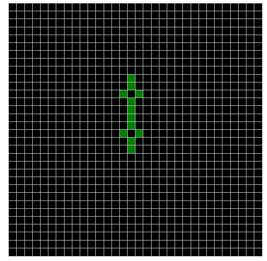

Other Projects
Conway's Game of Life
Check out an interactive Conway's Game of Life simulator I made for MIT's 6.170 (Software Studio) class.

Archive of Our Own
I've made a few themes (called "skins") for fanfiction site Archive of Our Own.